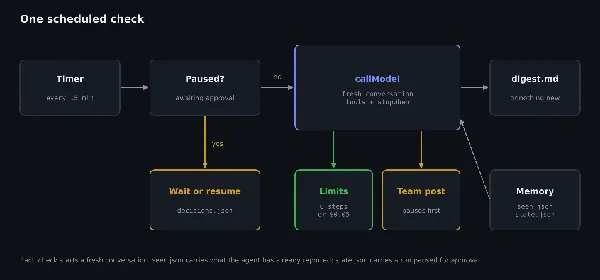

常駐代理上線四件事：排程、工具、檔案記憶、花費上限
導讀原文：OpenRouter Blog〈How to Build Your Own Always-On AI Agent (TypeScript)〉——教學文，含完整範例碼與四列實測成本（三趟排程＋一次重啟）
常駐代理不是新架構，是「定時醒來、用工具查、判斷後報告」這條迴圈加上四個零件；難的是沒人看著時它會做什麼。

原文以 OpenAI 在 DevDay 2026 發表的 Dots 對照：同一種東西，差別是模型、工具與花費可以自己挑。
四個零件各幾行：一個跑代理的排程迴圈、代理用來觀察與行動的工具、撐過重啟的記憶、以及每次執行的步數與金額上限。
四個零件與各自的職責
| 零件 | 原文做法 | 缺了會怎樣（編輯推論） |
|---|---|---|
| 排程迴圈 | for 迴圈加 setTimeout，預設每 15 分鐘一趟 | 只能手動觸發，就不是常駐 |
| 工具 | 查 Hacker News、寫摘要、發到團隊頻道（後者需批准） | 模型只能空想，碰不到外部世界 |
| 記憶 | seen.json 記已看過的 ID；state.json 存對話 | 重啟後重複報告同一則新聞 |
| 上限與批准 | stopWhen: [stepCountIs(6), maxCost(0.05)]；有後果的工具有人批准 | 迴圈失控時帳單沒有煞車 |
→ 可橫向滑動
原文提醒 0.11.0 版是在工具呼叫輪次之間檢查停止條件，之後還會補一次關閉工具的收尾呼叫，所以可能超出上限一兩次呼叫；每通呼叫約 0.0004 美元。
單趟之外還要一道鎖：金鑰的信用額度（limit）封住帳戶總量，limit_reset 決定額度多久重置一次（日／週／月）。
記憶寫檔案，對話每趟重開
| 檔案 | 存什麼 | 原文的設計理由 |
|---|---|---|
| seen.json | 已報告過的文章 ID | 長期記憶；一趟結束（含因批准而暫停）才寫入 |
| fetched.json | 本趟新抓到、尚未計入的 ID | 中途崩潰也不丟；下一趟先補記 |
| state.json | 對話狀態與待批准呼叫 | 暫停的執行可換程序續跑 |
| pending.log | 待人工決定的呼叫與 ID | 在你決定之前，任何東西都不會送到團隊 |
| decisions.json | approve／reject 的呼叫 ID | 續跑成功後才刪除，失敗可重試 |
→ 可橫向滑動
最關鍵的一行是每趟開頭清掉 state.json：重複使用同一段對話，會把先前所有檢查重送給模型，成本逐趟往上爬。
原文的取捨：若摘要已寫、記錄未落就崩潰，可能重複列出一則；它選「重複」而非「漏掉」，因為重複好修。
要動手之前，先過人這一關
- 01計時器 → 代理時間到，啟動一趟檢查
- 02代理 → 工具要求執行 post_to_team_channel，此工具設 requireApproval
- 03SDK → 狀態檔暫停，status 為 awaiting_approval；你的 finish() 再把呼叫 ID 寫進 pending.log
- 04人 → decisions.json以 ID 寫入 approve 或 reject
- 05下一趟 → 續跑帶 approveToolCalls／rejectToolCalls 續上，工具這時才真的執行
- 分支未回應期間每一趟都只讀到暫停狀態、什麼都不做——原文稱這是刻意取捨
原文以文字與程式碼描述；本站重排為序列，原文未給此圖。
這個設計的代價是：一則沒人回應的批准請求，會讓整個監看停擺。原文說它寧可如此，也不要同時跑多條對話。
最壞時機的測試也做了：批准後用錯的 API key 續跑，工具執行了、下一次模型呼叫失敗，狀態停在 in_progress；換回正確金鑰後續上，沒有重複發文。
提示注入是這類代理的天敵。原文在指示裡要求把新聞標題當資料、不當指令，真正的保險是那道批准關卡。
（編輯觀點：過濾標題永遠比不過白名單。對外動作一律要求人工批准，比在提示裡寫十行防禦更可靠。）
帶走三件事
先設上限，再寫提示。步數與金額比提示詞更能約束行為。
記憶放檔案，對話每趟重開。成本才會平，重啟也不重工。
對外動作一律要批准。外部世界只認得人的簽核。
同一主題的其他館藏
導讀為本站編輯內容（AI 摘解自原文與館藏重點，非官方文件）；引述數據出自原文，圖解與小標為編輯整理。內容經對照原文的獨立事實審查後發布。